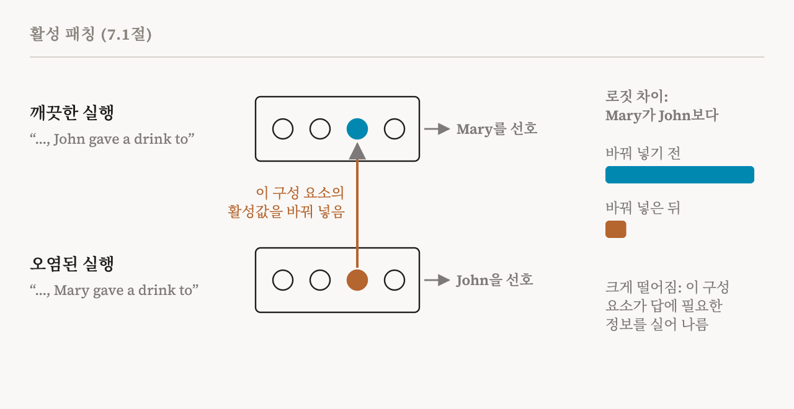
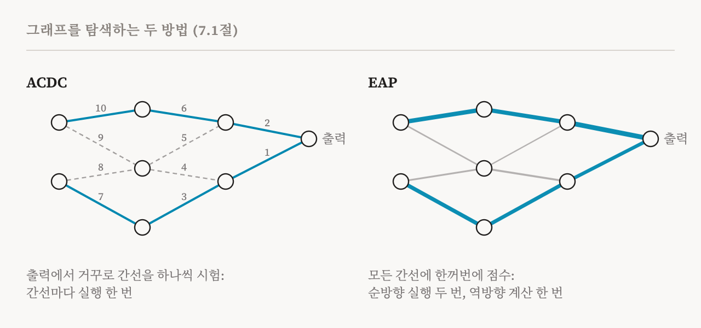

6편은 회로를, 모델의 계산 그래프 가운데 특정한 행동을 수행하는 작은 부분으로 정의했습니다. 10편부터 15편까지는 그 그래프의 노드로 쓸 더 나은 단위를 마련했습니다. 회로 부를 시작하는 이번 편은 그 그래프를 실제로 어떻게 찾는지 묻습니다. 이 책 7장의 첫머리와 7.1절(53–55쪽)을 다룹니다.
이 책은 먼저 회로가 메커니즘을 설명하는 유일한 방법은 아니라고 짚습니다. 1990년대에 연구자들은 순환 신경망의 은닉 상태를 적은 수의 상태로 분류하고, 신경망이 문장을 처리하는 과정을 단어마다 상태를 옮겨 다니는 유한 상태 기계로 설명했습니다. 하지만 회로가 지배적인 틀이 되었고, 아래의 방법들이 이 분야가 주로 쓰는 방법입니다.
기본 동작: 활성 패칭
이번 편의 거의 모든 방법은 실험 하나 위에 서 있습니다. 활성 패칭(activation patching)입니다. 입력 하나를 넣고 모델을 실행한 뒤, 관심 있는 행동을 재는 숫자 하나를 기록합니다. 예를 들어 모델이 정답을 얼마나 강하게 선호하는지입니다. 그다음 같은 입력으로 모델을 다시 실행하되, 이번에는 일부 구성 요소의 활성값을 다른 값으로 바꿔 넣고 그 숫자를 다시 기록합니다. 두 숫자의 차이가 이 입력에 대한 그 구성 요소들의 인과적 중요도입니다.
예를 하나 따라가면 구체적으로 보이고, 이 책의 실습 노트북도 바로 이 예를 씁니다. 6편의 간접 목적어 문장을 가져옵시다. "When Mary and John went to the store, John gave a drink to". GPT-2는 "Mary"로 이어 써야 합니다. 흔히 쓰는 측정값은 로짓 차이(logit difference), 곧 모델이 "Mary"에 "John"보다 얼마나 높은 점수를 주는지입니다. 이제 단어 하나만 바꾼 오염된(corrupted) 버전을 만듭니다. "When Mary and John went to the store, Mary gave a drink to". 여기서는 정답이 "John"으로 뒤집힙니다.

어떤 어텐션 헤드가 중요한지 시험하려면, 깨끗한(clean) 문장으로 실행하면서 그 헤드의 활성값만 오염된 문장의 것으로 바꿔 넣습니다. 로짓 차이가 무너지면, 그 헤드는 답이 기대는 정보, 대략 '어느 이름이 반복되었는가'를 실어 나르고 있었던 것입니다. 거의 움직이지 않으면, 그 헤드는 이 행동에 중요하지 않았던 것입니다. 이 책은 바꿔 넣는 값을 보통 이런 오염된 실행, 곧 특정한 정보를 더하거나 빼도록 입력을 바꾼 실행에서 가져오지만, 0이나 평균 활성값을 쓰는 연구도 있다고 전합니다. 이 선택은 중립적이지 않습니다. 모범 사례를 다룬 2024년의 한 연구는 이런 선택이 결론을 바꿀 수 있음을 보였습니다.
경로 패칭
활성 패칭은 어떤 구성 요소가 중요한지 묻습니다. 경로 패칭(path patching)은 두 구성 요소 사이의 특정한 연결이 중요한지 묻습니다. 6편의 계산 그래프를 떠올려 봅시다. 구성 요소 i의 출력은 구성 요소 j의 입력 가운데 하나로 들어갑니다. 경로 패칭은 i의 나머지 출력은 그대로 두고, 그 간선 하나를 따라 보내지는 활성값만 바꿔 넣고 효과를 잽니다. 그러면 정보의 흐름을 훨씬 세밀하게 짚을 수 있습니다. 예를 들어 어떤 헤드가 중요한 이유가 오직 뒤쪽의 특정한 헤드에 보내는 것 때문임을 보일 수 있습니다.
ACDC: 탐색 자동화하기
간선이 수천 개인 모델에서 간선마다 손으로 시험하는 것은 불가능에 가깝습니다. 2023년에 나온 자동 회로 찾기(automatic circuit discovery, ACDC)는 경로 패칭을 자동화합니다. 출력에서 출발해 그래프를 거꾸로 거슬러 갑니다. 간선마다 그 간선으로 보내지는 활성값을 바꿔 넣고, 과제 지표가 얼마나 바뀌는지 잽니다. 바뀐 정도가 정해 둔 문턱값보다 작으면 그 간선을 잘라 냅니다. 그렇지 않으면 남겨 두고, 그 간선으로 들어오는 간선들을 차례로 살펴봅니다. 끝까지 남은 것이 회로입니다.
ACDC는 그 행동을 만들어 내기에 충분한 부분 그래프를 곧장 찾습니다. 회로가 바로 그런 것이어야 합니다. 대가는 속도입니다. 시험하는 간선마다 모델을 따로 실행해야 합니다. 그리고 결과는 간선을 잘라 내는 순서와 문턱값에 따라 달라집니다.
귀속 패칭: 재는 대신 추정하기
2024년에 나온 간선 귀속 패칭(edge attribution patching, EAP)은 간선 하나하나를 차례로 재는 대신, 모든 간선의 효과를 한꺼번에 추정합니다. 비결은 1차 근사입니다. 자동차가 다음 1초 동안 얼마나 갈지를 지금 속도로 어림하는 것과 같은 생각입니다. 각 간선에 대해, 패칭의 효과를 그 간선의 활성값에 대한 지표의 그래디언트에, 깨끗한 실행과 오염된 실행에서 그 활성값이 얼마나 다른지를 곱한 값으로 근사합니다.

얻는 것이 엄청납니다. 모든 점수가 순방향 실행 단 두 번, 곧 깨끗한 입력과 오염된 입력에 대한 실행에, 모든 그래디언트를 한꺼번에 계산하는 역방향 계산 한 번만으로 나옵니다. ACDC는 간선마다 실행이 따로 필요합니다. 회로를 만드는 가장 단순한 방법은 점수가 가장 높은 간선들을 남기는 것입니다. 대가는 1차 근사가 비선형 효과와 상호작용을 놓칠 수 있다는 것입니다. 이후의 방법들은 추정을 개선합니다. 예를 들어 적분 그래디언트를 쓰는 EAP(EAP-IG)는 오염된 활성값에서 깨끗한 활성값으로 가는 경로를 따라 그래디언트를 평균합니다. 다른 방법은 텍스트의 여러 위치에 걸쳐 패칭해서 토큰 사이의 상호작용까지 잡아냅니다.
최적화로 찾는 회로
세 번째 갈래는 회로 찾기를 최적화 문제로 다룹니다. 간선을 시험하는 대신, 모델의 행동을 바꾸지 않고 계산 그래프의 어느 부분을 뺄 수 있는지를 경사 하강법으로 배웁니다. 간선 가지치기(edge pruning)는 간선 위의 마스크를 학습합니다. 다른 연구는 블록 전체부터 뉴런 하나까지 여러 크기의 노드 위에 마스크를 학습합니다. 이런 방법은 대개 패칭이나 귀속보다 더 희소한 회로를 찾습니다. 하지만 최적화 과정 때문에 무작위성이 끼어들고 학습률 같은 설정에 민감해져서, 찾아낸 회로가 덜 견고하고 해석하기 어려워질 수 있습니다.
과제 수준 회로와 질의 수준 회로
6편에서 회로 연구의 두 갈래를 만났습니다. 이 책은 여기서 방법론적인 관점으로 그 이야기로 돌아옵니다. 과제 수준 회로 찾기는 간접 목적어 찾기 데이터셋처럼 예시들의 데이터셋으로 정의한 능력 전체 뒤의 회로를 찾습니다. 개별 예시의 잡음을 줄이기 위해 구성 요소와 간선의 점수를 모든 입력에 걸쳐 평균하므로, 그 회로는 과제 전체를 나타냅니다. 질의 수준 회로 찾기는 특정한 프롬프트 하나를 설명합니다.
위의 방법들, 곧 패칭, ACDC, EAP, EAP-IG, 가지치기 방법은 거의 모두 과제 수준 설정에서 개발되고 평가되었습니다. 이 책의 저자 두 사람이 쓴 2026년 연구는 EAP-IG를 개별 프롬프트로 넓혔습니다. 그 덕분에 사용자가 던지는 복잡하고 자연스러운 요청처럼, 관련된 계산이 입력마다 크게 다를 수 있는 경우에도 희소하면서 충실한 회로를 찾을 수 있게 되었습니다.
방법 비교
| 방법 | 핵심 아이디어 | 강점 | 한계 |
|---|---|---|---|
| 활성 패칭 | 구성 요소의 활성값을 바꿔 넣고 출력 변화를 잼 | 단순함. 직접적인 인과적 증거 | 개입이 많이 필요함. 구성 요소가 거친 단위일 수 있음 |
| 경로 패칭 | 간선 하나를 따라가는 활성값을 바꿔 넣음 | 정보 흐름을 더 세밀하게 짚음 | 경로가 많아서 비쌈 |
| ACDC | 행동이 유지되는지 확인하며 간선을 탐욕적으로 잘라 냄 | 완전히 자동화됨. 충분한 부분 그래프를 곧장 찾음 | 느림. 자르는 순서와 문턱값에 민감 |
| EAP | 그래디언트로 모든 간선의 효과를 추정 | 빠르고 병렬적. 많은 간선으로 확장 가능 | 1차 근사라 비선형 효과와 상호작용을 놓칠 수 있음 |
| SAE나 CLT 기반 | 날것의 구성 요소 대신 해석 가능한 특징 위에서 회로를 찾음 | 더 세밀한 특징 수준의 회로 | 특징의 품질에 달림. 사전을 학습하는 추가 비용 |
마지막 줄이 17편의 주제입니다. 이 책의 실습 노트북은 위의 Mary와 John 프롬프트로 GPT-2에서 첫째 줄과 넷째 줄을 구현합니다.
| 용어 | 뜻 |
|---|---|
| 활성 패칭 | 일부 구성 요소의 활성값을 바꿔 넣고 행동 지표가 어떻게 바뀌는지 재는 것 |
| 깨끗한 실행과 오염된 실행 | 원래 입력에 대한 실행과, 정답이 달라지도록 최소한으로 바꾼 입력에 대한 실행 |
| 로짓 차이 | 모델이 정답에 정해 둔 오답보다 얼마나 높은 점수를 주는지 |
| 0이나 평균으로 제거 | 오염된 실행의 값 대신 0이나 평균값으로 활성값을 바꾸는 것 |
| 경로 패칭 | 두 구성 요소 사이의 간선 하나로 보내지는 활성값만 바꿔 넣는 것 |
| ACDC | 자동 회로 찾기. 출력에서 거꾸로 간선을 하나씩 잘라 냄 |
| 간선 귀속 패칭(EAP) | 그래디언트로 모든 간선의 패칭 효과를 한꺼번에 추정하는 것 |
| 1차 근사 | 곡률과 상호작용을 무시하고 지금의 기울기로 변화를 어림하는 것 |
| 적분 그래디언트 | 두 입력 사이의 경로를 따라 그래디언트를 평균해 더 나은 추정을 얻는 것 |
| 간선 가지치기 | 어떤 간선을 뺄 수 있는지 최적화로 배우는 것 |
| 과제 수준 회로 | 데이터셋에 걸쳐 평균한, 어떤 능력에 대한 회로 |
| 질의 수준 회로 | 특정한 프롬프트 하나에 대한 회로 |
17편에서는 노드가 해석 가능한 특징인 회로를 다룹니다. 대체 모델과 귀속 그래프입니다.